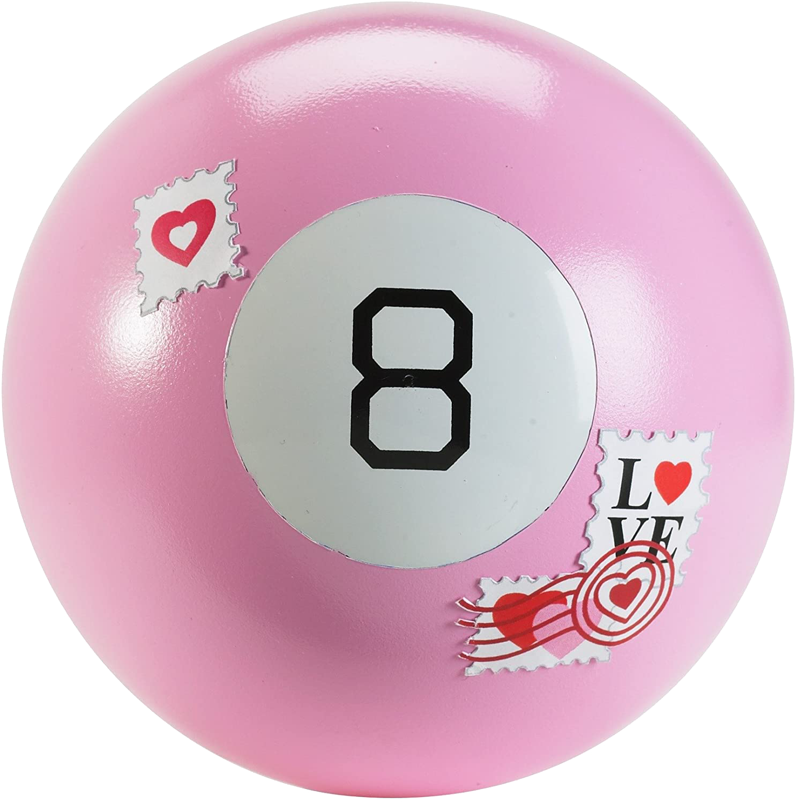

Lab 4: Pseudocoding and Problem-Solving
The purpose of this lab was to learn how to “pseudocode” or in other
words, write out a list of instructions in english, (not code), that
explain step by step the task that your code will later do.
This is helpful for prototyping, troubleshooting, and avoiding
confusion long before you type out a single line of code.
Challenges
This overall was a pretty easy lab. Pseudocode is something I’ve had
practice with in the past, and have used in previous classes. With that
said, it is sometimes challenging to NOT start coding within my pseudo
code, as I am already thinking ahead to mechanical thing’s I’m going to
need to make, like arrays and for-loops. Keeping it english is, to some
extent, a challenge.
Problems
No real problems this week either. The only one I ran into was deciding
what to write pseudocode for. For the coding section, we took about an hour
learning about sorting algorithms and then deciding that they're a bit beyond
our skill level oops.
Results of Work
Some reasonable Pseudocode talking about how to cut a pineapple, and
how a basic Magic 8-Ball would work. Check it!

How to Cut a Pineapple (Pseudocode!)
First you need to know if your pineapple is ripe!
→ a ripe pineapple will have a firm shell but still give in slightly when you squeeze.
Once you have selected your pineapple, cut off the crown and the bottom of the fruit.
→ about ½ inch from each end of the pineapple.
Begin to trim the skin of the pineapple.
→ start cutting the thick skin of the pineapple from top to bottom, making sure
to retain as much pineapple flesh as possible.
Next, cut out the eyes of the pineapple.
→ looking at your pineapple you can see that the eyes are placing along diagonal
lines that go around the body of the fruit.
→ using your knife, make a diagonal cut that go around the pineapple, creating a
v-shape trench cut around the eyes.
→ begin picking out the pieces of pineapple chunks with eyes on them.
Now with the body of pineapple you have left, you can either cut it into rings or chunks:
For rings:
→ cut out the core by standing the pineapple up and feel around ur pineapple to
figure out the diameter length of the core.
→ once you’ve found the general diameter of the core, begin cutting around the
circle shape of the core down to the bottom of the pineapple so that the the core
comes out as a cylinder-shaped piece.
For chunks:
→ stand your pineapple body up and cut it lengthwise into quarter pieces.
→ cut the core off each piece.
→ then cut each piece lengthwise, and then crosswise for small chunk pieces.
You're done! Store in an air tight container in the fridge.
Enjoy!

Pseudocode for a simple Magic 8 Ball program!
//Pseudo Code for Magic 8 Ball:
//“Display magic 8 ball” -> Graphic, if available. (Picture of magic 8 ball)
//Ask user if they’d like to ask a question:
//“Welcome to the Magic 8 ball, would you like to ask a question?” (Y/N)
//IF Y = Proceed to next step
//IF N = Exit program
//Ask user for question:
//“What is your question?”
//User input = "question"
//Save user input -> To variable “question”
//Display text: “Lets Ask the Magic 8 ball!”
//Generate random answer:
//Generate random number: “randomNumber” between 0 and the number of answers you have.
//( A list of 15 - 20 hard coded magic 8 ball answers exist within the code. This might be in an if/else structure OR an array of strings.)
//Select the random answer from the table, based on the random number,
//save the answer to a variable named “answer”.
//Display User question:
//“Your question was: “question”
//Display random answer:
//The Magic 8 Ball says: “answer”
//Ask user if they would like to ask another question (Y/N)
//If “Y” -> Restart program from "Ask user for question"
//If “N” -> Exit -> Display exit message, end program.